🌍 События
Итоги фестиваля объявят 6 ноября на пресс-конференции в ТАСС
Итоги Международного кинофестиваля стран БРИКС+ будут объявлены 6 ноября 2026 года на пресс-конференции в Информационном агентстве ТАСС.
Авторское, национальное и кросс-культурное кино на одной фестивальной площадке. Премьеры, конкурсы, индустриальные питчинги и специальные программы от стран БРИКС+.
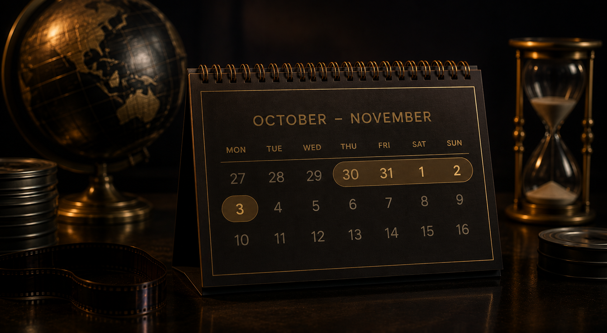
Международное жюри фестиваля объединяет выдающихся деятелей киноиндустрии, режиссёров, продюсеров и экспертов в области киноискусства из стран БРИКС+ и государств-партнёров.
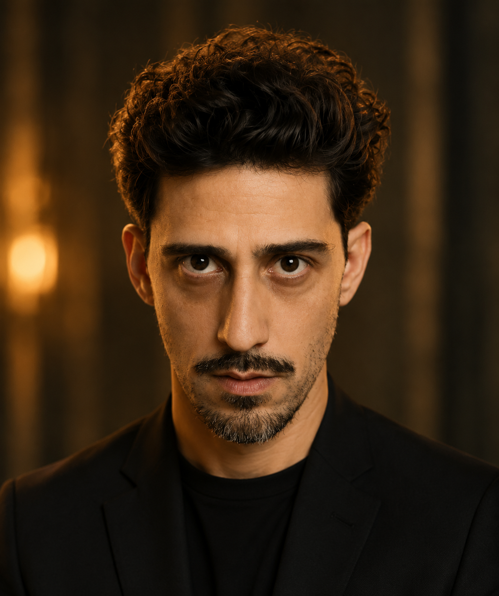
Бразильский актёр и режиссёр, работающий в кино, театре и перформансе. Автор короткометражных и документальных фильмов. Куратор кинопрограмм и проектов по развитию зрительской аудитории.

Бразильский режиссёр и кинооператор, работающий в игровом и документальном кино. Снимал проекты более чем в 40 странах мира и участвовал в международных кинопроектах Латинской Америки. Лауреат и номинант международных операторских премий, член жюри и наставник международных кинолабораторий.
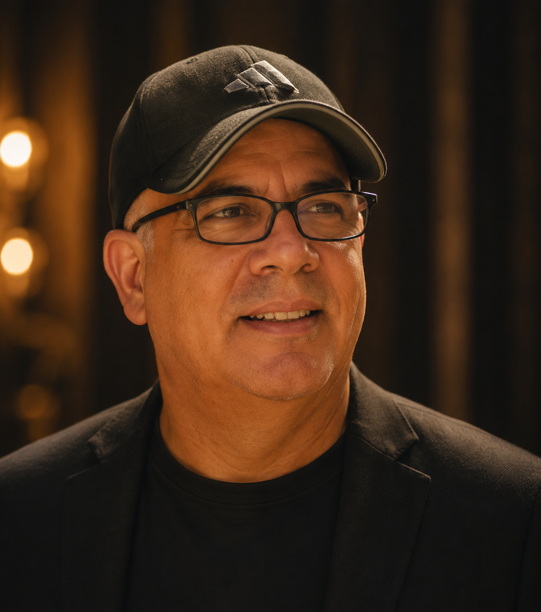
Кубинский режиссёр и сценарист, лауреат национальных культурных наград и международных кинофестивалей. Автор документальных и игровых фильмов, телевизионных проектов и музыкальных клипов. Член жюри крупнейших кинофестивалей Латинской Америки и Европы.
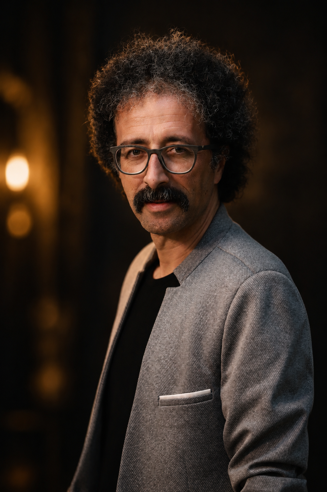
Иранский режиссёр и сценарист, автор художественных фильмов и театральных постановок. Его фильм «В объятиях дерева» был выдвинут от Ирана на премию «Оскар» 2025 года. Лауреат международных кинофестивалей в США, Индии, Италии и Канаде, обладатель наград за лучшую режиссуру и сценарий.
Индийский эксперт в сфере кино, международных коммуникаций и культурной дипломатии. Руководитель международных инициатив, направленных на развитие сотрудничества между творческими индустриями, бизнесом и государственными институтами. Активно содействует культурному обмену и продвижению международных кинопроектов.
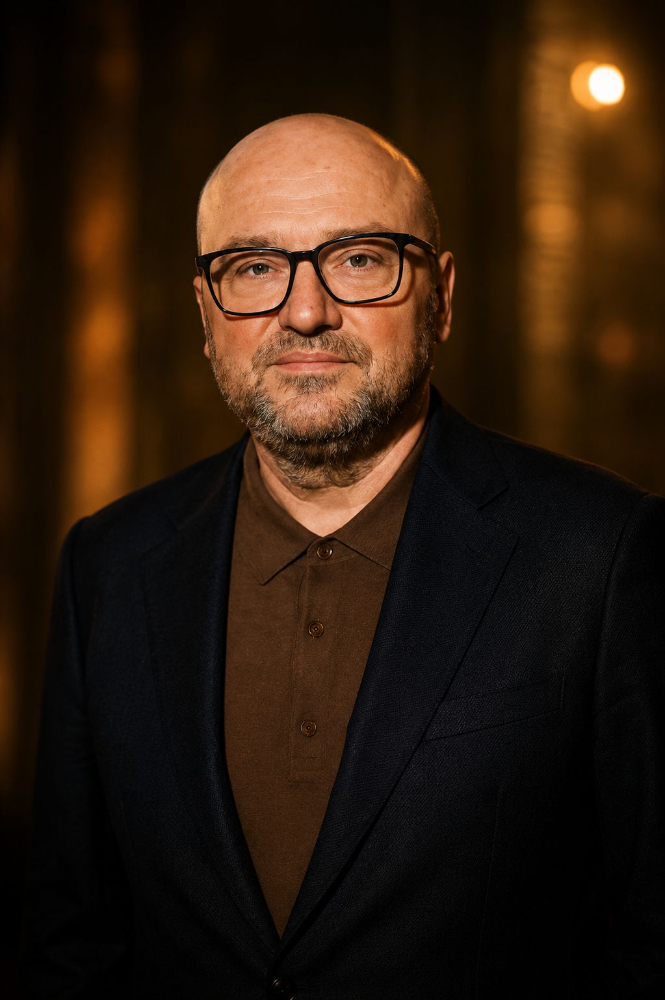
Белорусский кинорежиссёр и сценарист, основатель кинокомпании «Авантдрайв». Автор популярных фильмов «Спайс Бойз» и «Добро пожаловать в семью». Обладатель награды «Лучший фильм» фестиваля онлайн-кинотеатров «Новый сезон» за лучший полнометражный фильм.
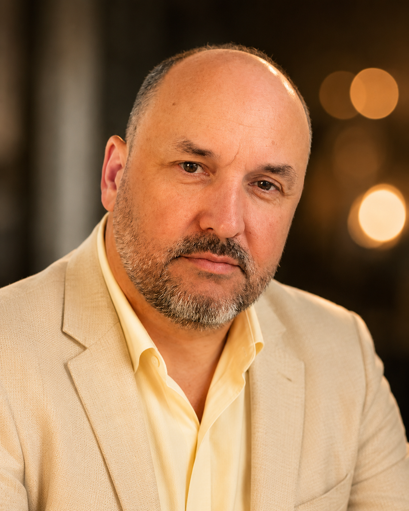
Российский режиссёр, сценарист и продюсер, основатель кинокомпании «Студия „Автор“». Автор фильмов «Хармс», «Пальмира» и «Не хороните меня без Ивана». Обладатель двух «Золотых кубков» Шанхайского международного кинофестиваля, выпускник Высших курсов режиссёров и сценаристов, работал в творческой группе Алексея Германа над фильмом «Трудно быть богом».
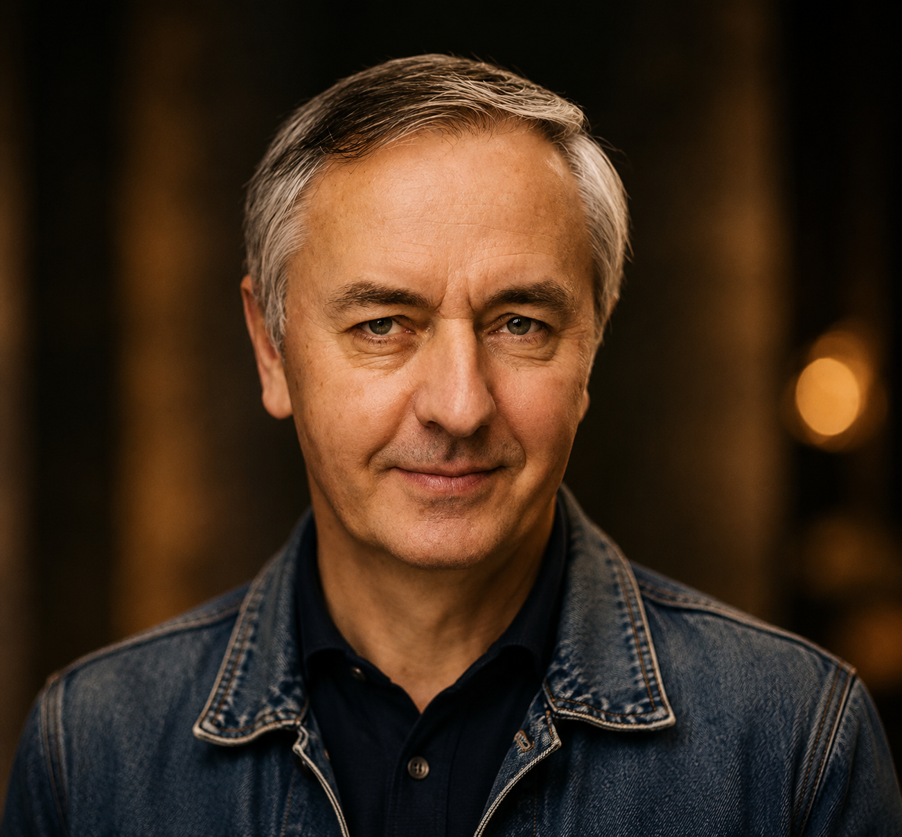
Кандидат искусствоведения, один из ведущих специалистов по истории раннего российского и советского кинематографа. Автор фундаментальных исследований и проектов по восстановлению утраченных фильмов Дзиги Вертова, Льва Кулешова и Александра Медведкина. Преподаёт во ВГИКе и на Высших курсах сценаристов и режиссёров.
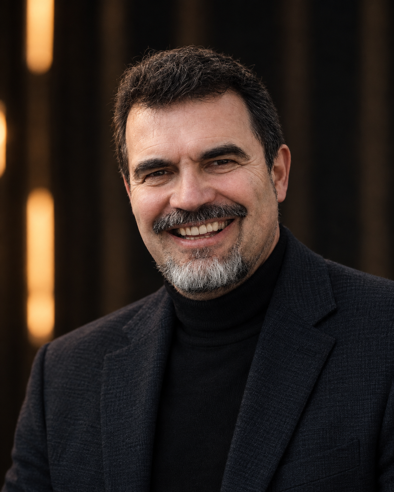
Журналист-международник, шеф-редактор Аналитического центра ТАСС. Специализируется на международной повестке, аналитике и освещении глобальных политических и общественных процессов.
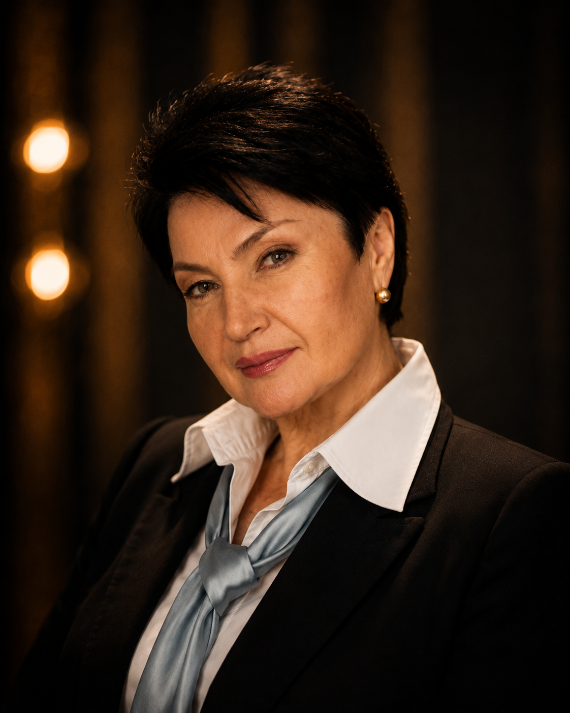
Доктор философских наук, действительный член Российской академии художеств. Посол доброй воли ЮНЕСКО, сопредседатель Генерального совета Ассамблеи народов мира. Сопрезидент Общероссийского общественного движения «За сбережение народа».
Основная структура регламента. Полный регламент фестиваля опубликован в этом PDF-документе.
Главная награда Международного кинофестиваля БРИКС+.
Гран-при и специальные призы вручаются по решению международного жюри.
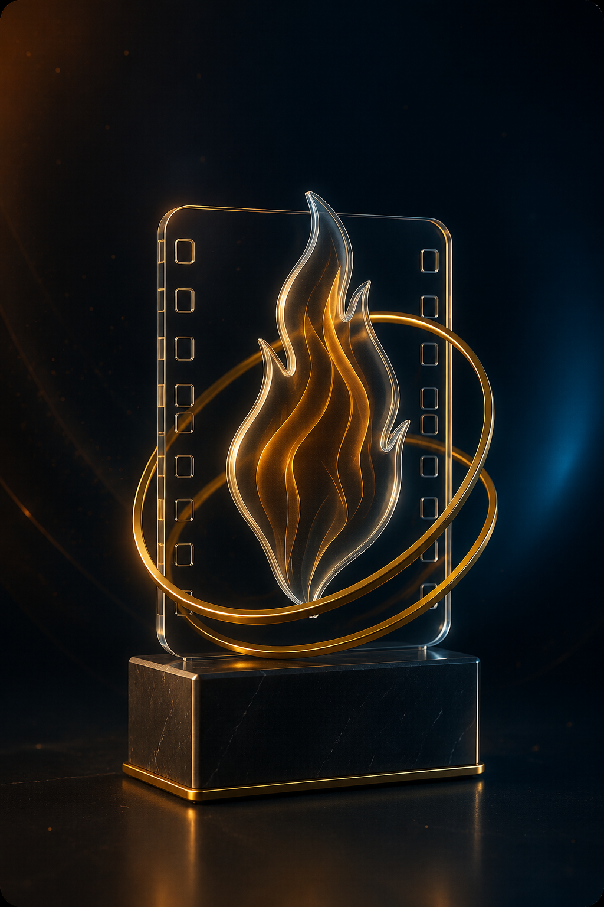
Статуэтка Гран-при фестиваля — символ движения культур БРИКС+, которые вращаются вокруг искусства кино и создают энергию новых историй.
Пламя внутри орбит — метафора творца, чья работа становится центром мирового внимания.
Программа фестивальных показов проходит в двух городах. 29 октября в Санкт-Петербурге состоялся показ неигрового кино. С 30 октября по 2 ноября показы проходят в Москве. 3 ноября конкурсные кинопоказы состоятся в Санкт-Петербурге.
Приглашаем на четыре документальных фильма о науке, изобретениях, людях и родных местах в рамках Международного кинофестиваля БРИКС+.
29 октября, 16:15–18:45
Вход бесплатный, необходима регистрация.
Количество мест ограничено — 80 зрителей.
Индийско-российский драматический фильм на языке маратхи. Фильм снят известным индийским режиссером Гаджендрой Ахире в тесном сотрудничестве с российскими кинематографистами. История строится на эмоциональном и культурном контрасте между тропическим индийским регионом Конкан и заснеженной Сибирью.
Зима 1942 года, деревня Куракино . В суровых условиях оккупированной Псковской области, Матвей Кузьмин повторяет подвиг Ивана Сусанина и предотвращает диверсию в советском тылу. Получив приказ провести вражеский отряд в тыл прорвавшихся красноармейцев, Кузьмин подчиняется. Всю ночь старик водит немцев сквозь метель по бездорожью, но враги не подозревают, что он задумал.
Фильм, обращённый к культуре коренных народов Амазонии и экологической теме в художественной форме.
Рассказ о Бокситогорске, поколении заводских рабочих, упадке промышленности, отъезде молодёжи и жителях, сохранивших верность родному краю.
Фильм посвящён исчезающему народному искусству « сваанг » и судьбе мастера Хаппана Саанги . Его внук Битту помогает деду вернуться к творчеству и соединить традиционное представление с современными технологиями.
Афшин , молодой человек с синдромом Дауна, должен уехать с отцом во Францию, но неожиданное событие не позволяет отцу взять его с собой.
В начале XX века фотограф и предприниматель Рихард Штремер приезжает в Минск, чтобы открыть первый кинотеатр и снять первый фильм; исполнительницей главной роли может стать жена губернатора.
Гадамали и его жена — единственные жители деревни, которые не уехали в город на зиму. Когда жена впадает в кому , Гадамали предстоит принять трудное решение.
В опустевшей гималайской деревне пожилые супруги живут вдали от цивилизации, переживая одиночество и ожидая возвращения пропавшего сына. Камерная история о любви, надежде, старении и исчезающем традиционном укладе сельской Индии.
Молодую афганскую мигрантку Нобахар вынуждают выйти замуж за пожилого Замана, но в итоге она решается самостоятельно распорядиться своей судьбой.
Дорожная история о ветеране и его внуке из поколения Z, которые разыскивают бывших товарищей; фильм о памяти и связи поколений.
После исчезновения шестилетней Ясны спокойствие сельскохозяйственной деревни нарушается. Отставной эколог Ахмад Пиран возглавляет поиски и публикует видео, которое быстро становится популярным и привлекает множество добровольцев. Однако девочку спрятал в доме Ахмада его работник Айхан . В ходе поисков раскрываются тёмные тайны прошлого Ахмада, и ему приходится сделать трудный выбор.
Россия, конец XIX века. На фоне надвигающейся войны с Великобританией в императорском дворце находят загадочное устройство — механическую блоху. Расследовать происшествие поручают молодому офицеру Петру Огарёву, мечтающему заслужить доверие императора Александра III. В поисках истины он объединяется с Левшой — гениальным, но забытым мастером из Тулы. Вместе они погружаются в мир интриг и опасностей. Чтобы раскрыть заговор, им предстоит бросить вызов системе, разгадать семейные тайны и сделать трудный выбор между долгом и чувством. На кону — безопасность страны и их собственные судьбы.
Документальное исследование «расписных камней», стёртой истории коренных народов Амазонии и Рио-де-Жанейро и связи этой памяти с климатическим кризисом.
Документальный фильм о пути Михаина Лопеса к пятому олимпийскому золоту в Париже в 2024 году, его матери, тренере и родном городе Эррадура .
Жизненный путь выдающегося русского изобретателя и инженера Павла Яблочкова, совершившего революцию в электротехнике.
Масштабное исследование солнца: от истории советских наблюдений до строительства в Бурятии одного из крупнейших в мире гелиогеофизических комплексов.
Гадамали и его жена — единственные жители деревни, которые не уехали на зиму в город и предпочли остаться дома. Когда жена впадает в кому, Гадамали оказывается перед трудным выбором.
XIV век. Монгольская империя рушится, Великий Шёлковый путь погружается в хаос, некогда процветавшие города лежат в руинах. Закалённый в боях Тимур Барлас возвращается в родные края. Он не мечтает стать грозой городов и империй от Индии до Персии. Он борется за то, что дорого ему здесь и сейчас: честь семьи, любовь, будущее для своих детей и людей, которые видят в нём своего лидера.
Подросток-сирота вынужден покинуть детский дом. Из своего личного дела он узнаёт, что семья потеряла его, и с надеждой отправляется на поиски родных. Он ещё не знает, что это путешествие станет для него путём взросления.
Снятая на основании реальных событий, эта картина рассказывает, как Иран начинал свой собственный путь к ракетным технологиям. Остросюжетный фильм повествует о нелёгком пути «отца» ракетной программы Ирана, Хасана Техрани-Могаддама. Герой фильма, Ибрахим Шарики, собирает команду иранских специалистов, которым поручено в короткий срок остановить обстрелы иранских мирных городов и гибель мирного населения, воспользовавшись помощью ливийцев. «Воин от бога» дебютировал в 2025 году на международном кинофестивале «Фаджр» (Fajr), получив национальную премию «Хрустальный Симорг» (Crystal Simorgh).
Молодая афганская мигрантка Нобахар приезжает в Иран, где против своей воли становится женой пожилого мужчины по имени Заман. Брак, заключённый по необходимости и под принуждением, постепенно раскрывает непростое прошлое Замана — человека, который пытается исправить свои ошибки. Но Нобахар берёт судьбу в свои руки и впервые получает возможность выбирать.
В отдалённой деревне мальчик по имени Ашу решается на смелый поступок: он отправляется с двухлетней Асмой в другую деревню, чтобы там её благословили и устроили праздник в её честь. По дороге происходит неожиданное событие, которое заставляет его выбирать между возвращением Асмы домой и собственными нуждами.
Документальный фильм повествует о взаимодействии наших стран — России и Китая — на примере Северной столицы, Санкт-Петербурга. На первый взгляд, россияне и китайцы — совершенно непохожие друг на друга народы. Нас разделяют тысячи километров и тысячелетия в истории наших цивилизаций. Но стоит лишь начать общаться, как выясняется, что у нас очень много общего во взглядах. Мы близки по духу и менталитету. И, конечно, это не случайно.
В нашем фильме мы совершим кинопутешествие по блистательному Петербургу. Очень молодой по китайским меркам город на Неве совершенно гениально впитал в себя всё лучшее в мировой культуре, искусстве, архитектуре и науке. И несмотря на то, что Петербург признан европейским городом, в нём можно найти черты и китайской культуры.
Мы увидим Санкт-Петербург глазами китайцев, живущих, работающих и учащихся в городе на Неве, и по-новому взглянем на наш город через их восприятие и отношение. Также мы встретимся и с петербуржцами, увлечёнными Китаем и китайской культурой. Через истории этих людей убедимся, что наши народы прочно связывают основанное на фундаменте истории стабильное настоящее и общий взгляд на совместное счастливое будущее.
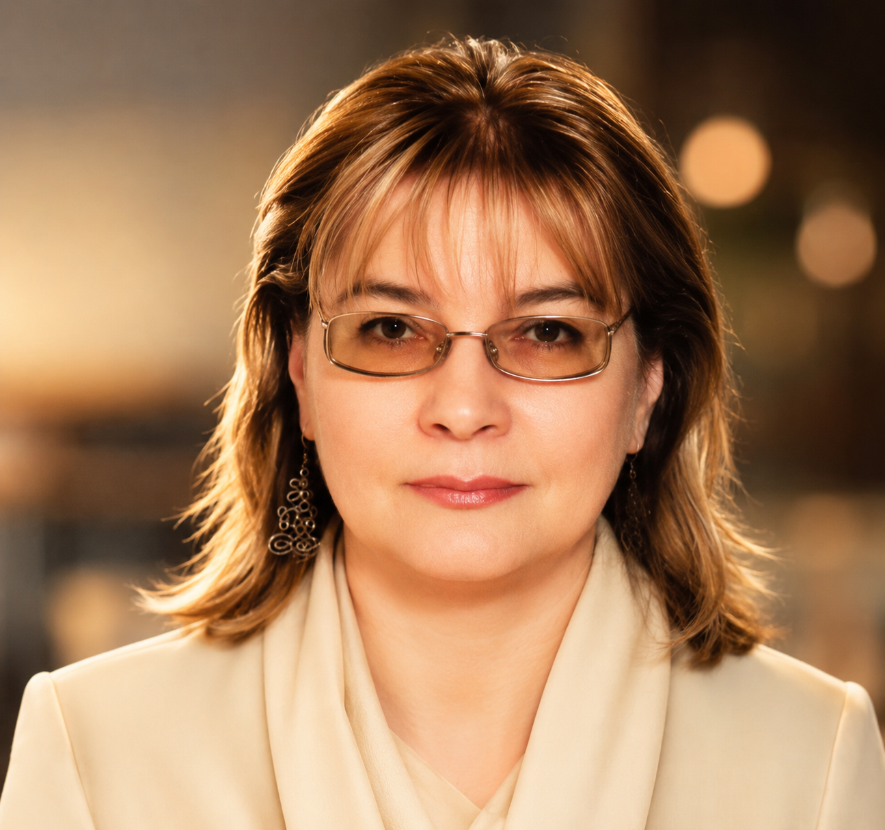
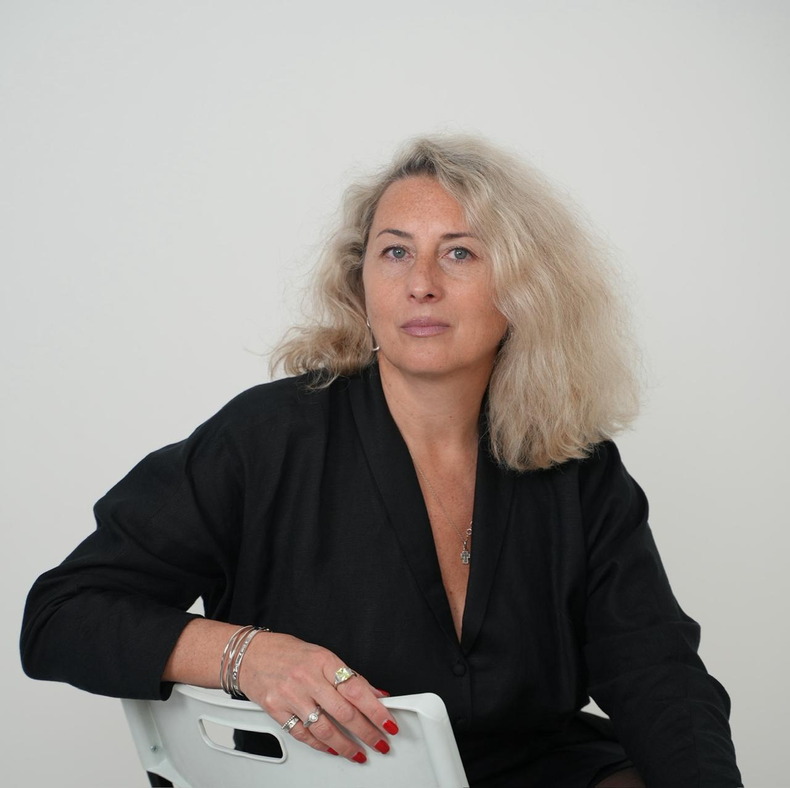
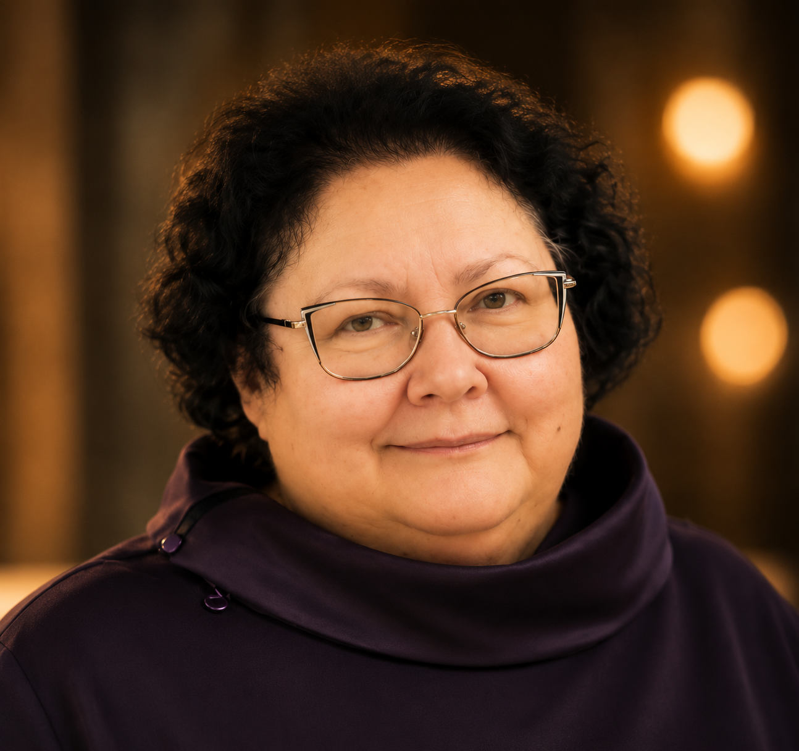
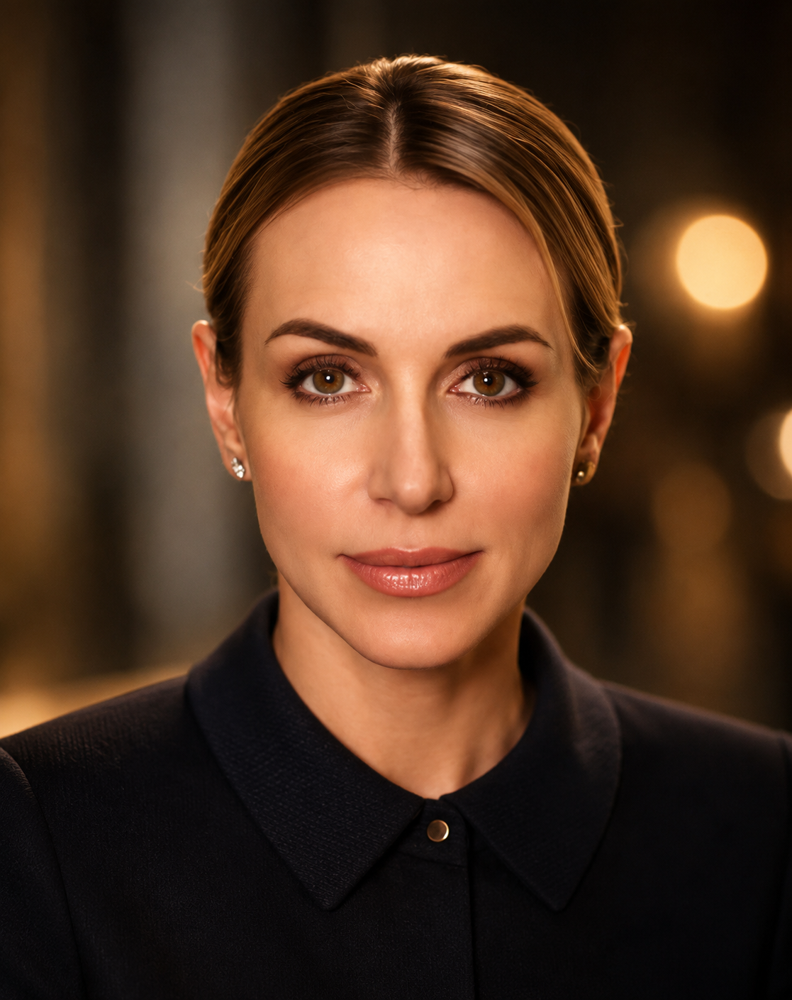
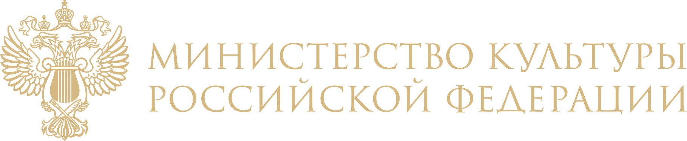
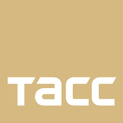
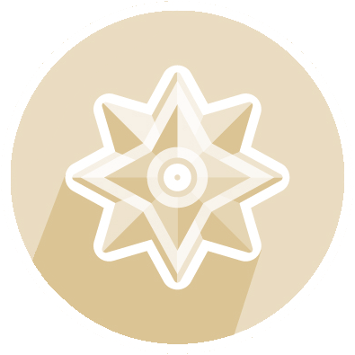
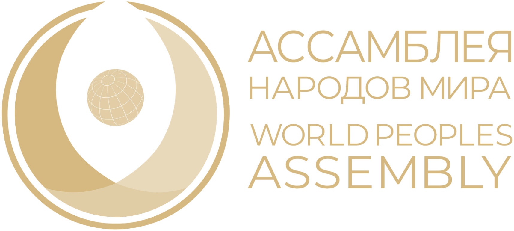
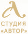
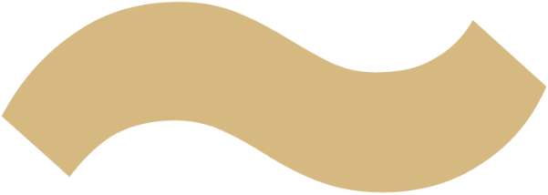